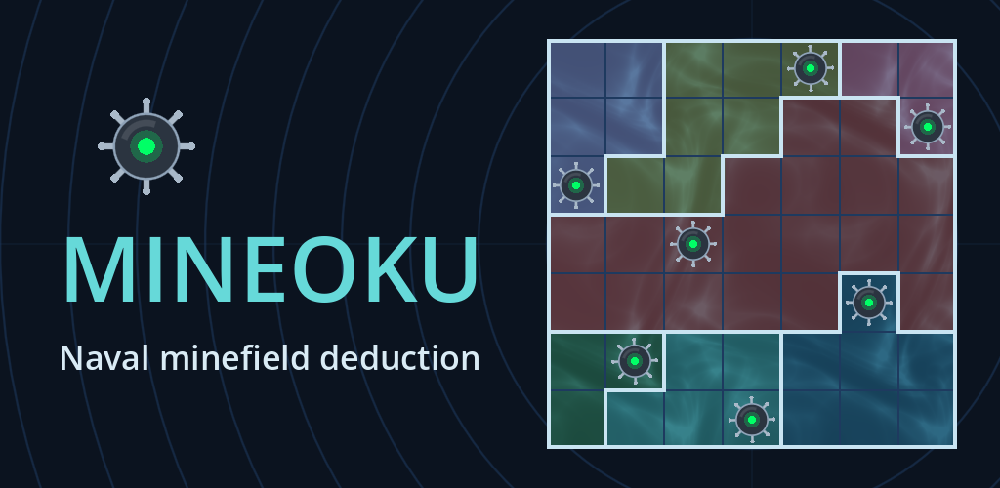
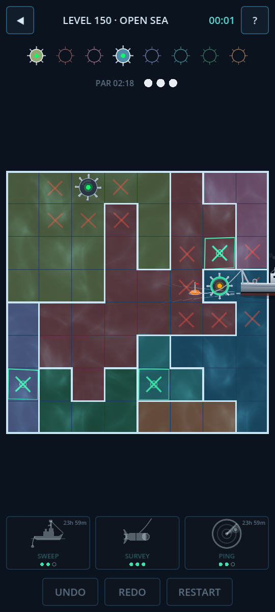
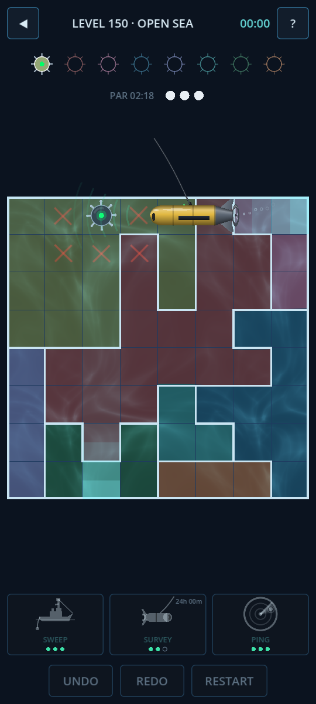
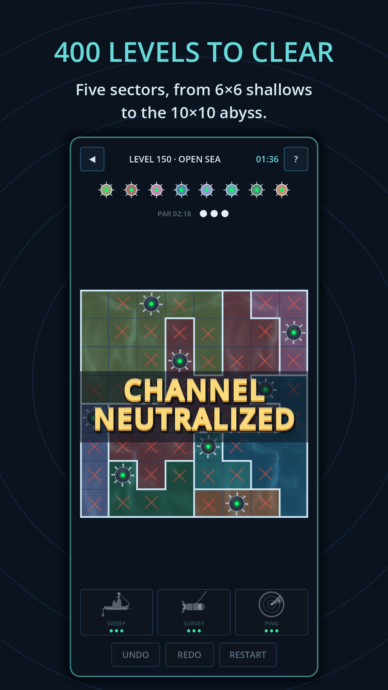
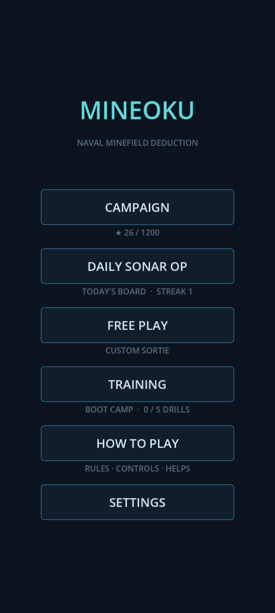
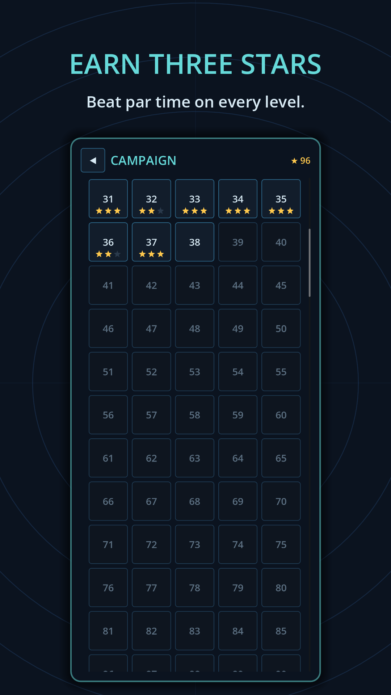
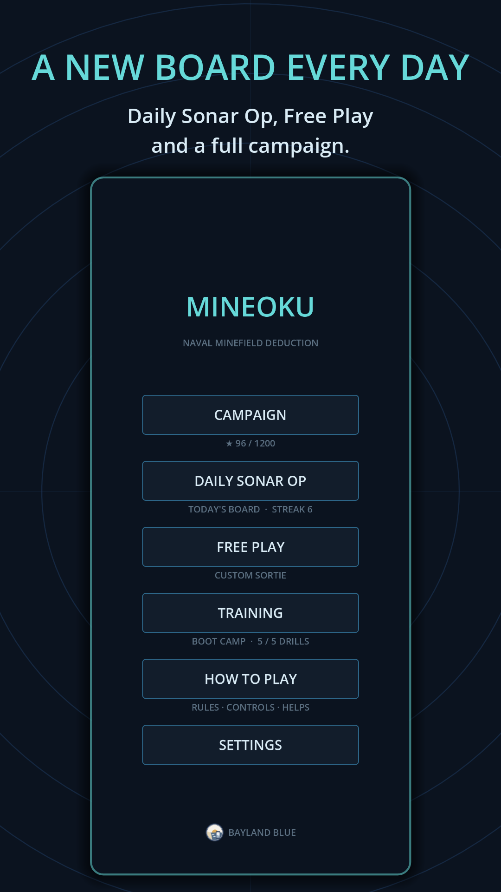

Mineoku

Chart the minefield by pure logic. Every board has exactly one solution, and you never have to guess: each mine can be found by careful deduction.






How it works
The board is split into colored regions. Place mines so that:
- every row has exactly one mine,
- every column has exactly one mine,
- every region has exactly one mine, and
- no two mines touch, not even diagonally.
Mark the cells you've ruled out with an X. But careful: put an X on a real mine and it goes off. You have three lives per board.
400 levels in five sectors
Each level is graded by the deductions it needs, so the challenge climbs steadily from the shallows to the deep.
| Sector | Levels | Board |
|---|---|---|
| Shallow Waters | 1–25 | 6×6 |
| Coastal Patrol | 26–100 | 7×7 |
| Open Sea | 101–225 | 8×8 |
| Deep Trench | 226–325 | 9×9 |
| Abyssal Plain | 326–400 | 10×10 |
Daily Sonar Op and Free Play
A new board every day, the same for every player, growing from 7×7 early in the week to 10×10 on Sunday, so keep your streak going. Or pick any size from 6×6 to 10×10 in Free Play for a fresh board whenever you like.
Learn as you go
- Boot Camp: five short coached drills teach the rules and the key deductions
- Earn up to three stars per level by beating par
- Undo and redo, plus optional automatic X marks for the cells a new mine rules out
Help when you're stuck
Send a minesweeper to Sweep a mine into view, launch a Survey drone that shows and explains the next logical step, or Ping the board to clear a few safe cells. Helps never cost stars. Each has three charges, a used charge comes back 12 hours later, and you can watch an optional ad to get one back sooner.
A living sonar console
- Swaying moored mines with blinking lights and sonar pings
- A convoy sails across every cleared board
- An underwater ambient soundtrack
Ads
The game is free to play, with a banner ad below the board and a short ad between boards after every five minutes of play. A one-time Remove Ads purchase in Settings turns off the banner and the ads between boards for good, and helps recharge in 2 hours instead of 12. Ads that restore a help charge only play when you choose to watch one.
Support
Questions, feedback or bug reports: baylandblue@gmail.com